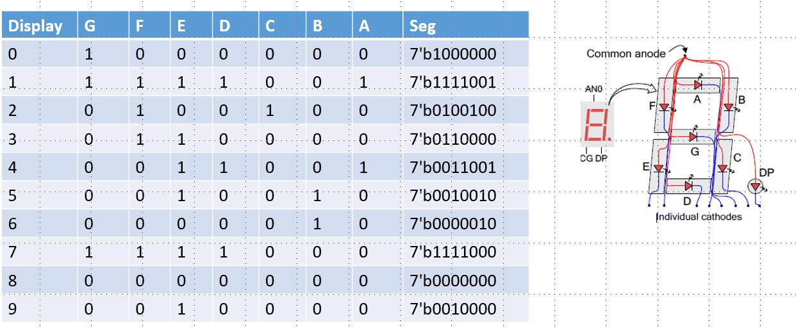

7-Segment Display in Digital Electronics
A 7-segment display is an electronic display device widely used in digital
electronics to show decimal numerals (0–9) and some basic characters. It
consists of seven LED segments arranged in the pattern of the number "8"
with each segment labeled from "a" to "g".

Structure and Design
The seven-segment display consists of:
- Seven LED segments arranged in a figure-8 pattern
-
Each segment is typically a rectangular LED designated by letters a–g
- Often includes an additional segment "dp" (decimal point)
-
Segments are made from light-scattering material (often milky in color) to
ensure uniform illumination
The segments are positioned as:
- Three horizontal segments (top, middle, bottom)
- Four vertical segments forming the sides
Working Principle
The display works by selectively illuminating combinations of the seven
segments to represent different characters:
- "0": a, b, c, d, e, f
- "1": b, c
- "2": a, b, g, e, d
- "3": a, b, g, c, d
- "4": f, g, b, c
- "5": a, f, g, c, d
- "6": a, f, g, e, c, d
- "7": a, b, c
- "8": a, b, c, d, e, f, g
- "9": a, b, c, d, f, g
Types of 7-Segment Displays
Based on Connection Configuration:
-
Common Cathode (CC):
- All cathodes are connected to ground (logic 0)
- Segments activate with a HIGH (logic 1) signal
-
Common Anode (CA):
- All anodes are connected to power supply (logic 1)
- Segments activate with a LOW (logic 0) signal